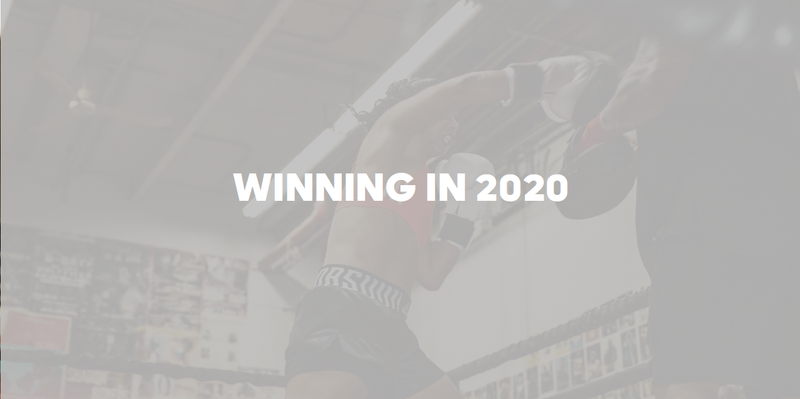

Selected work · 2022—2026
Ideas made visible.
A selection of projects across product, data, and the web. Every one began as a slightly messy question.

Case study 01 · Lead project
LENA Organization Design
A regional transformation and organization design program that unified fragmented operations, strengthened collaboration, and built a scalable growth model for a leading global sportswear brand.
The work connected global strategy with local execution across marketing, retail, finance, HR, and logistics, using five strategic pillars to align consumer focus, channel growth, commercial capability, brand relevance, and governance.
View full case study ↗- 5 strategic pillars aligned across the cluster
- Double-digit growth and significant bottom-line growth
- New eCommerce revenue stream launched
- Stronger collaboration, engagement, and knowledge sharing

Case study 02
Merchandising Agent
A transparent retail intelligence system that turns sales and inventory signals into clear actions for pricing, stock health, and operational focus.
View full implementation ↗